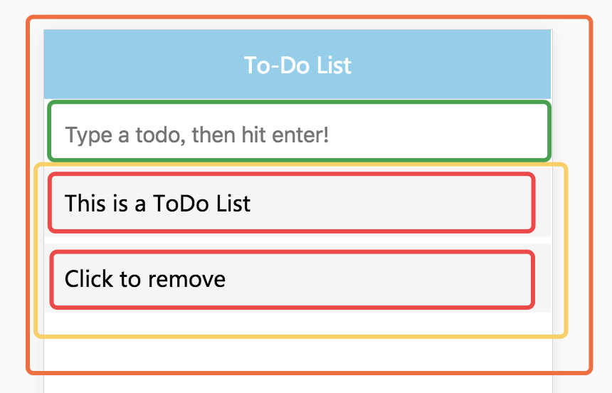

React 相关基础
React 是Facebook开发的一款JS库，用于构建数据会随时间改变的大型应用。相比传统型的前端开发，React开辟了一个相当另类的途径，实现了前端界面的高效率高性能的开发。React 并不是一个完整的MVC框架，最多可以认为是MVC中的V。
React原理
在Web开发中，我们总需要将变化的数据实时的反应到UI上，这时候就需要对DOM进行操作，而复杂、频繁的DOM操作通常是性能瓶颈产生的原因。React因此引入了虚拟DOM (Virtual DOM) 的机制，通过虚拟DOM去更新真实的DOM。每当数据变化时，React都会重新构建整个DOM树。React有个diff算法，更新虚拟DOM并不保证马上影响真实的DOM，而是会等事件循环结束后，利用这个diff算法，比较更新前后的DOM，计算出最小的步骤去更新真实的DOM。
因此，我们开发时不需要再去关注某个数据变化如果更新一个或多个具体的DOM元素，只需要关心在任意一个数据状态下，整个界面是如何Render的。
组件化
React推荐以组件的方式去重新思考UI的构成，将UI上的每一个功能相对独立的模块定义为组件，然后通过组件直接的组合和嵌套，构成大的组件，最终构建整个页面。
以todo-list为例：

可以看到，上图有4个组件。
- App (橙色): 包含了整个例子
- Input (绿色): 输入框，用于接收用户输入
- List (黄色): 根据用户输入展示数据集合
- ListItem (红色): 展示每条数据
这里没有把To-Do List这个标题作为一个组件，因为在本例中，头部是不变的。若头部变的更加复杂（增加一些新的功能），就有足够的理由成为一个单独的组件。
确定了组件后，开始划分组件的层级。这很简单，图中的子组件在层级结构中应该作为子节点。
AppInputListListItem
数据流
React是单向数据流，从父节点传递到子节点（通过props）。如果顶层的某个props改变了，React会重渲染所有的子节点（未做性能优化）。严格意义上React只提供，也强烈建议使用这种数据交流方式。
在 React 中有两种数据模型：props 和 state。
propsprops的主要作用是让该组件的父组件可以传入参数来配置该组件。它是外部传入的配置参数，组件内部无法控制也无法修改。除非外部组件主动传入新的props,否则props永远保持不变。
statestate的主要作用是用于组件保存，控制，修改自己的可变状态。state在组件内部初始化，可以被组件自身修改，而外部不能访问也不能修改。state只能从当前组件调用this.setState方法进行更新，setState会导致组件的重新渲染。props和state的使用方式尽可能的使用
props来当数据源，state来存放状态值（简单的数据）。
常用技术栈
仅此记录我想了解的 React 技术栈：